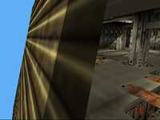
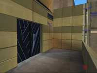
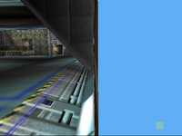
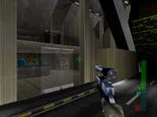
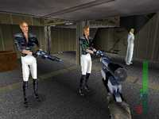
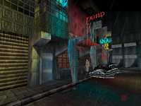
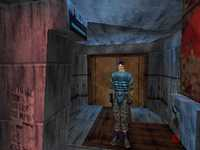
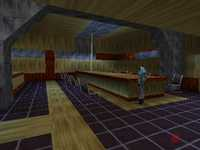

|
.
| Perfect
Dark : Passe-Muraille |
| Avec
ce Code, vous pouvez passer à travers TOUTES les Portes
du jeu. Ci-dessous, je me suis promené dans l'Institut
Carrington, et voilà trois Photos Histoire de prouver que
ça fonctionne. J'ai bien fait exprès de me mettre
"dans" la porte ! |
80285798 0001



Ci-dessous, amusons-nous dans Extraction !


Enfin, vous pouvez aller au Punk Pond dans Chicago !


